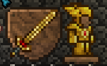

The starter armour is the same for every class until
Crimtane. Use wooden for now, then start caving for Golden
or Silver along with its respective broadsword.
 This should allow you to kill
the eye of Cthulhu. Use its drops to forge the Blood
Butcherer. Start grinding up some bombs and accessories for
the brain of Cthulhu. It is possible with only 17 defence
however it could be difficult. Start the fight with
destroying 3 crimson hearts.